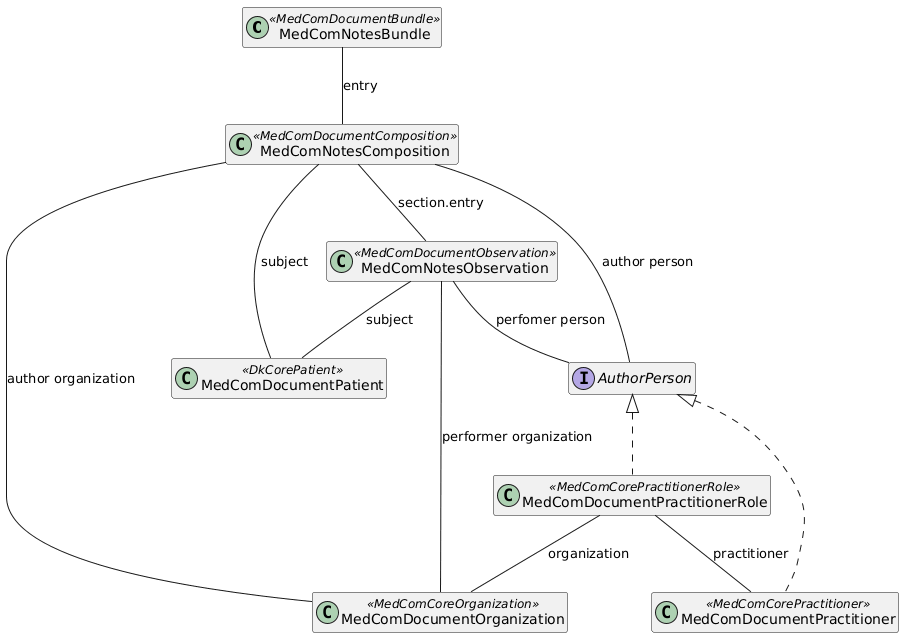

DK MedCom Notes
1.0.0 - release

DK MedCom Notes
1.0.0 - release

This page is part of the The DK MedCom Notes IG (v1.0.0: Release 1.x.x) based on FHIR (HL7® FHIR® Standard) R4. This is the current published version in its permanent home (it will always be available at this URL). For a full list of available versions, see the Directory of published versions
| Official URL: http://medcomfhir.dk/ig/notes/ImplementationGuide/medcom.fhir.dk.notes | Version: 1.0.0 | |||
| Active as of 2026-03-10 | Computable Name: MedComNotes | |||
This implementation guide (IG) is provided by MedCom to describe the use of FHIR ®© Shared Notes (Da: Deling af Journalnotater) in document based exchange of data in Danish healthcare.
This IG contains profiles supporting the MedCom document Shared Notes. The purpose of sharing notes is to make the notes from a healthcare provider - initially general practice - available to relevant healthcare actors, thereby supporting continuity of care and providing insight into clinically relevant assessments, observations, and decisions documented by the general practitioner.
More information about the project Shared Notes can be found here.
The MedCom Shared Notes document will be exchanged via the National Service Platform (NSP) using the Document Sharing Service (DDS), which is already used for national sharing of healthcare documents. Each document must contain only one note and its related information; therefore, if a patient has attended multiple consultations (e.g., with a general practitioner), the requesting system will receive multiple documents.
The FHIR standard will ensure consistent structuring of metadata and clinically relevant information, enabling Shared Notes to be searched, interpreted, and used correctly by receiving systems, clinicians, and patients.
The structure of the Shared Notes document is depicted in the following diagram:

The Shared Notes IG follows the general MedCom FHIR Document model. This includes the resources Bundle, Composition, Organization, Patient and if relevant Practitioner and PractitionerRole. To hold information about the patient's Notes, the resource Observation is also included.
The following sections describe the overall purpose of each profile.
MedComNotesBundle is used as the Bundle profile for the standard. This profiles inheritsfrom MedComDocumentBundle. The Bundle profile acts as the container for all included resources and they must all be referenced from the Bundle.entry element, which is illustrated in the examples.
MedComNotesComposition creates the structure of the document. It is specifically designed for structuring patients' Notes, inheriting from MedComDocumentComposition. The key differences are: the Composition.type is fixed to "Encounter note" to standardize the document type; the Composition.title must be the following in Danish: "Journalnotat for 'CPR-nummer'"; and the Composition.section.entry is restricted to reference MedComNotesObservation.
MedComNotesObservation is the profile that specifies the note in the document. It inherits from MedComDocumentObservation and further restricts the profile, for example is valueattachment specified to only include the data as text/html, which is where the note will be included.
MedComDocumentPatient describes the basic requirements for information about citizens and patients when exchanging a document. The profile inherits from MedComCorePatient and further limit the requirements, e.g. may documents only be exchanged for patients with a CPR-number. It is not allowed to add a replacement-CPR (Danish: erstatningsCPR), as this is not supported in the infrastructure.
MedComDocumentOrganization is a profile representing Danish healthcare organizations that acts as the author institution in FHIR Documents. The profile inherits from MedComCoreOrganization.
MedComDocumentPractitionerRole represents the role of the health care professional that acts as the author person. The profile inherits from MedComCorePractitionerRole
MedComDocumentPractitioner represents the health care professional that acts as the author person. The profile inherits from MedComCorePractitioner and further requires a given and family name to be present.
A Shared Notes document includes several timestamps. These timestamps are present in the profiles MedComNotesBundle, MedComNotesComposition and MedComNotesObservation. They have different purposes:
If the Composition.date and Observation.effectiveDatetime are similar, this represents that the note has not been updated after it was generated. If the two timestamps are different, this represents that the note has been updated after it was generated.
The examples page different examples of the Shared Notes standard. Each example is accompanied by a short description of the example.
On MedCom Terminology IG all referenced CodeSystem and ValueSets developed by MedCom can be found.